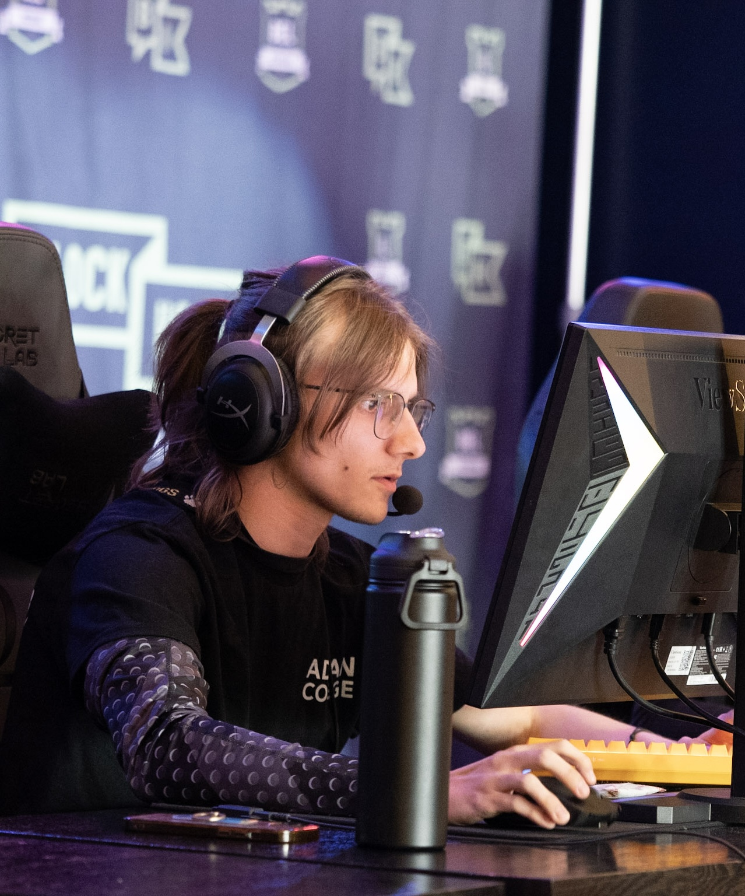

Welcome to Coltons Little Website
This is page 2 of my little website that I am currently learning to build. While it may look small
one day this website will look like a proper website. I care very much about how my website
looks. I want it to look the best that it can when it is finished and for it to be something that I can
use in my resume one day to show potential employers how well I can write code. While that
might be a long way, I think that this class will be able to teach me and build the skills required
to turn this website into what I envision it to be.
So far while programming this website I have found myself coding in HTML which is
something that I have already gained some experience in in previous courses at Adrian College
however it has been a while since I last used it so this class is helping me brush up on it however something new that I have started to use is Visual studio code which I really want
to learn how to use quickly due to the fact that it has made my life while coding a lot
simpler so it has been a very effective tool

here are some cool ideas I want to add
- images that scroll by when scrolling
- list of achievements with links to the achievemnt attached to the items
- an autobio of my life
here is a list of things that I would base my websites on
- Esports
- Music
- world quisine